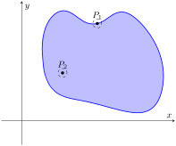
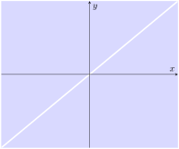

Section13.2Limits and Continuity of Multivariable Functions
We continue with the pattern we have established in this text: after defining a new kind of function, we apply calculus ideas to it. The previous section defined functions of two and three variables; this section investigates what it means for these functions to be “continuous.”
We begin with a series of definitions. We are used to “open intervals” such as \((1,3)\text{,}\) which represents the set of all \(x\) such that \(1\lt x\lt 3\text{,}\) and “closed intervals” such as \([1,3]\text{,}\) which represents the set of all \(x\) such that \(1\leq x\leq 3\text{.}\) We need analogous definitions for open and closed sets in the \(xy\)-plane.
Figure13.2.1.Introducing limits and continuity for functions of several variables
Subsection13.2.1Open and Closed Subsets in Higher Dimensions
Definition13.2.2.Open Disk, Boundary and Interior Points, Open and Closed Sets, Bounded Sets.
An open disk \(B\) in \(\mathbb{R}^2\) centered at \((x_0,y_0)\) with radius \(r\) is the set of all points \((x,y)\) such that \(\ds\sqrt{(x-x_0)^2+(y-y_0)^2} \lt r\text{.}\)
Let \(S\) be a set of points in \(\mathbb{R}^2\text{.}\) A point \(P\) in \(\mathbb{R}^2\) is a boundary point of \(S\) if all open disks centered at \(P\) contain both points in \(S\) and points not in \(S\text{.}\)
A point \(P\) in \(S\) is an interior point of \(S\) if there is an open disk centered at \(P\) that contains only points in \(S\text{.}\)
A set \(S\) is open if every point in \(S\) is an interior point.
A set \(S\) is closed if it contains all of its boundary points.
A set \(S\) is bounded if there is an \(M \gt 0\) such that the open disk, centered at the origin with radius \(M\text{,}\) contains \(S\text{.}\) A set that is not bounded is unbounded.
Figure 13.2.3 shows several sets in the \(xy\)-plane. In each set, point \(P_1\) lies on the boundary of the set as all open disks centered there contain both points in, and not in, the set. In contrast, point \(P_2\) is an interior point for there is an open disk centered there that lies entirely within the set.
(a)
(b)
(c)
Figure13.2.3.Illustrating open and closed sets in the \(xy\)-plane
The set depicted in Figure 13.2.3.(a) is a closed set as it contains all of its boundary points. The set in Figure 13.2.3.(b) is open, for all of its points are interior points (or, equivalently, it does not contain any of its boundary points). The set in Figure 13.2.3.(c) is neither open nor closed as it contains some of its boundary points.
This domain of this function was found in Example 13.1.4 to be \(D = \{(x,y)\,|\,\frac{x^2}9+\frac{y^2}4\leq 1\}\text{,}\) the region bounded by the ellipse \(\frac{x^2}9+\frac{y^2}4=1\text{.}\) Since the region includes the boundary (indicated by the use of “\(\leq\)”), the set contains all of its boundary points and hence is closed. The region is bounded as a disk of radius 4, centered at the origin, contains \(D\text{.}\)
As we cannot divide by 0, we find the domain to be \(D = \{(x,y)\,|\,x-y\neq 0\}\text{.}\) In other words, the domain is the set of all points \((x,y)\)not on the line \(y=x\text{.}\)

Figure13.2.6.Sketching the domain of the function in Example 13.2.5
The domain is sketched in Figure 13.2.6. Note how we can draw an open disk around any point in the domain that lies entirely inside the domain, and also note how the only boundary points of the domain are the points on the line \(y=x\text{.}\) We conclude the domain is an open set. The set is unbounded.
Subsection13.2.2Limits
Recall a pseudo-definition of the limit of a function of one variable:
“\(\lim\limits_{x\to c}f(x) = L\)”
means that if \(x\) is “really close” to \(c\text{,}\) then \(f(x)\) is “really close” to \(L\text{.}\) A similar pseudo-definition holds for functions of two variables. We'll say that
“\(\lim\limits_{(x,y)\to (x_0,y_0)} f(x,y) = L\)”
means “if the point \((x,y)\) is really close to the point \((x_0,y_0)\text{,}\) then \(f(x,y)\) is really close to \(L\text{.}\)” The formal definition is given below.
Definition13.2.7.Limit of a Function of Two Variables.
Let \(S\) be a set containing \(P=(x_0,y_0)\) where every open disk centered at \(P\) contains points in \(S\) other than \(P\text{,}\) let \(f\) be a function of two variables defined on \(S\text{,}\) except possibly at \(P\text{,}\) and let \(L\) be a real number. The limit of \(f(x,y)\) as \((x,y)\) approaches \((x_0,y_0)\) is \(L\text{,}\) denoted
means that given any \(\varepsilon \gt 0\text{,}\) there exists \(\delta \gt 0\) such that for all \((x,y)\) in \(S\text{,}\) where \((x,y)\neq (x_0,y_0)\text{,}\) if \((x,y)\) is in the open disk centered at \((x_0,y_0)\) with radius \(\delta\text{,}\) then \(\abs{f(x,y) - L}\lt \varepsilon\text{.}\)
The concept behind Definition 13.2.7 is sketched in Figure 13.2.8. Given \(\varepsilon \gt 0\text{,}\) find \(\delta \gt 0\) such that if \((x,y)\) is any point in the open disk centered at \((x_0,y_0)\) in the \(xy\)-plane with radius \(\delta\text{,}\) then \(f(x,y)\) should be within \(\varepsilon\) of \(L\text{.}\)
Computing limits using this definition is rather cumbersome. The following theorem allows us to evaluate limits much more easily.
Figure13.2.8.Illustrating the definition of a limit. The open disk in the \(xy\)-plane has radius \(\delta\text{.}\) Let \((x,y)\) be any point in this disk; \(f(x,y)\) is within \(\varepsilon\) of \(L\text{.}\)
Theorem13.2.9.Basic Limit Properties of Functions of Two Variables.
Let \(b\text{,}\)\(x_0\text{,}\)\(y_0\text{,}\)\(L\) and \(K\) be real numbers, let \(n\) be a positive integer, and let \(f\) and \(g\) be functions with the following limits:
\begin{equation*}
\lim_{(x,y)\to (x_0,y_0)}f(x,y) = L \textit{ and } \lim_{(x,y)\to (x_0,y_0)} g(x,y) = K\text{.}
\end{equation*}
The following limits hold.
Constants: \(\lim\limits_{(x,y)\to (x_0,y_0)} b = b\)
Identity \(\lim\limits_{(x,y)\to (x_0,y_0)} x = x_0\text{;}\)\(\lim\limits_{(x,y)\to (x_0,y_0)} y = y_0\)
The aforementioned theorems allow us to simply evaluate \(y/x+\cos(xy)\) when \(x=1\) and \(y=\pi\text{.}\) If an indeterminate form is returned, we must do more work to evaluate the limit; otherwise, the result is the limit. Therefore
We attempt to evaluate the limit by substituting 0 in for \(x\) and \(y\text{,}\) but the result is the indeterminate form “\(0/0\text{.}\)” To evaluate this limit, we must “do more work,” but we have not yet learned what “kind” of work to do. Therefore we cannot yet evaluate this limit.
When dealing with functions of a single variable we also considered one-sided limits and stated
\begin{equation*}
\lim_{x\to c}f(x) = L \text{ if, and only if, } \lim_{x\to c^+}f(x) =L \textbf{ and} \lim_{x\to c^-}f(x) =L\text{.}
\end{equation*}
That is, the limit is \(L\) if and only if \(f(x)\) approaches \(L\) when \(x\) approaches \(c\) from either direction, the left or the right.
In the plane, there are infinitely many directions from which \((x,y)\) might approach \((x_0,y_0)\text{.}\) In fact, we do not have to restrict ourselves to approaching \((x_0,y_0)\) from a particular direction, but rather we can approach that point along a path that is not a straight line. It is possible to arrive at different limiting values by approaching \((x_0,y_0)\) along different paths. If this happens, we say that \(\lim\limits_{(x,y)\to(x_0,y_0) } f(x,y)\) does not exist (this is analogous to the left and right hand limits of single variable functions not being equal).
Our theorems tell us that we can evaluate most limits quite simply, without worrying about paths. When indeterminate forms arise, the limit may or may not exist. If it does exist, it can be difficult to prove this as we need to show the same limiting value is obtained regardless of the path chosen. The case where the limit does not exist is often easier to deal with, for we can often pick two paths along which the limit is different.
Example13.2.11.Showing limits do not exist.
Show \(\lim\limits_{(x,y)\to (0,0)} \frac{3xy}{x^2+y^2}\) does not exist by finding the limits along the lines \(y=mx\text{.}\)
Show \(\lim\limits_{(x,y)\to (0,0)} \frac{\sin(xy)}{x+y}\) does not exist by finding the limit along the path \(y=-\sin(x)\text{.}\)
Evaluating \(\lim\limits_{(x,y)\to (0,0)} \frac{3xy}{x^2+y^2}\) along the lines \(y=mx\) means replace all \(y\)'s with \(mx\) and evaluating the resulting limit:
While the limit exists for each choice of \(m\text{,}\) we get a different limit for each choice of \(m\text{.}\) That is, along different lines we get differing limiting values, meaning the limit does not exist.
Let \(f(x,y) = \frac{\sin(xy)}{x+y}\text{.}\) We are to show that \(\lim\limits_{(x,y)\to (0,0)} f(x,y)\) does not exist by finding the limit along the path \(y=-\sin(x)\text{.}\) First, however, consider the limits found along the lines \(y=mx\) as done above.
By applying L'Hospital's Rule, we can show this limit is 0 except when \(m=-1\text{,}\) that is, along the line \(y=-x\text{.}\) This line is not in the domain of \(f\text{,}\) so we have found the following fact: along every line \(y=mx\) in the domain of \(f\text{,}\)\(\lim\limits_{(x,y)\to(0,0)} f(x,y)=0\text{.}\) Now consider the limit along the path \(y=-\sin(x)\text{:}\)
This last limit is of the form “\(2/0\)”, which suggests that the limit does not exist. Step back and consider what we have just discovered. Along any line \(y=mx\) in the domain of the \(f(x,y)\text{,}\) the limit is 0. However, along the path \(y=-\sin(x)\text{,}\) which lies in the domain of \(f(x,y)\) for all \(x\neq 0\text{,}\) the limit does not exist. Since the limit is not the same along every path to \((0,0)\text{,}\) we say \(\lim\limits_{(x,y)\to (0,0)}\frac{\sin(xy)}{x+y}\) does not exist.
Example13.2.12.Finding a limit.
Let \(f(x,y) = \frac{5x^2y^2}{x^2+y^2}\text{.}\) Find \(\lim\limits_{(x,y)\to (0,0)} f(x,y)\text{.}\)
It is relatively easy to show that along any line \(y=mx\text{,}\) the limit is 0. This is not enough to prove that the limit exists, as demonstrated in the previous example, but it tells us that if the limit does exist then it must be 0.
To prove the limit is 0, we apply Definition 13.2.7. Let \(\varepsilon \gt 0\) be given. We want to find \(\delta \gt 0\) such that if \(\sqrt{(x-0)^2+(y-0)^2} \lt \delta\text{,}\) then \(\abs{f(x,y)-0} \lt \varepsilon\text{.}\)
Set \(\delta \lt \sqrt{\varepsilon/5}\text{.}\) Note that \(\abs{\frac{5y^2}{x^2+y^2}} \lt 5\) for all \((x,y)\neq (0,0)\text{,}\) and that if \(\sqrt{x^2+y^2} \lt \delta\text{,}\) then \(x^2\lt \delta^2\text{.}\)
Let \(\sqrt{(x-0)^2+(y-0)^2} = \sqrt{x^2+y^2}\lt \delta\text{.}\) Consider \(\abs{f(x,y)-0}\text{:}\)
Thus if \(\sqrt{(x-0)^2+(y-0)^2}\lt \delta\) then \(\abs{f(x,y)-0}\lt \varepsilon\text{,}\) which is what we wanted to show. Thus \(\lim\limits_{(x,y)\to(0,0)} \frac{5x^2y^2}{x^2+y^2} = 0\text{.}\)
Subsection13.2.3Continuity
Definition 1.5.1 defines what it means for a function of one variable to be continuous. In brief, it meant that the graph of the function did not have breaks, holes, jumps, etc. We define continuity for functions of two variables in a similar way as we did for functions of one variable.
Definition13.2.13.Continuous.
Let a function \(f(x,y)\) be defined on a set \(S\) containing the point \((x_0,y_0)\text{.}\)
\(f\) is continuous at \((x_0,y_0)\) if \(\lim\limits_{(x,y)\to(x_0,y_0)} f(x,y) = f(x_0,y_0)\text{.}\)
\(f\) is continuous on \(S\) if \(f\) is continuous at all points in \(S\text{.}\) If \(f\) is continuous at all points in \(\mathbb{R}^2\text{,}\) we say that \(f\) is continuous everywhere.
Example13.2.14.Continuity of a function of two variables.
Let \(f(x,y) = \left\{ \begin{array}{rl} \frac{\cos(y) \sin(x) }{x} \amp x\neq 0 \\
\cos(y) \amp x=0
\end{array} \right.\text{.}\) Is \(f\) continuous at \((0,0)\text{?}\) Is \(f\) continuous everywhere?
To determine if \(f\) is continuous at \((0,0)\text{,}\) we need to compare \(\lim\limits_{(x,y)\to (0,0)} f(x,y)\) to \(f(0,0)\text{.}\)
Applying the definition of \(f\text{,}\) we see that \(f(0,0) = \cos(0) = 1\text{.}\)
We now consider the limit \(\lim\limits_{(x,y)\to (0,0)} f(x,y)\text{.}\) Substituting \(0\) for \(x\) and \(y\) in \((\cos(y) \sin(x) )/x\) returns the indeterminate form “0/0”, so we need to do more work to evaluate this limit.
Consider two related limits: \(\lim\limits_{(x,y)\to (0,0)} \cos(y)\) and \(\lim\limits_{(x,y)\to(0,0)} \frac{\sin(x) }x\text{.}\) The first limit does not contain \(x\text{,}\) and since \(\cos(y)\) is continuous,
We have found that \(\lim\limits_{(x,y)\to (0,0)} \frac{\cos(y) \sin(x) }{x} = f(0,0)\text{,}\) so \(f\) is continuous at \((0,0)\text{.}\)
A similar analysis shows that \(f\) is continuous at all points in \(\mathbb{R}^2\text{.}\) As long as \(x\neq0\text{,}\) we can evaluate the limit directly; when \(x=0\text{,}\) a similar analysis shows that the limit is \(\cos(y)\text{.}\) Thus we can say that \(f\) is continuous everywhere. A graph of \(f\) is given in Figure 13.2.15. Notice how it has no breaks, jumps, etc.
The following theorem is very similar to Theorem 1.5.10, giving us ways to combine continuous functions to create other continuous functions.
Theorem13.2.16.Properties of Continuous Functions.
Let \(f\) and \(g\) be continuous on a set \(S\text{,}\) let \(c\) be a real number, and let \(n\) be a positive integer. The following functions are continuous on \(S\text{.}\)
Sums/Differences: \(f\pm g\)
Constant Multiples: \(c\cdot f\)
Products: \(f\cdot g\)
Quotients: \(f/g\) { (as longs as \(g\neq 0\) on \(S\))}
Powers: \(f^n\)
Roots: \(\sqrt[n]{f}\) (if \(n\) is even then \(f\geq 0\) on \(S\text{;}\) if \(n\) is odd, then true for all values of \(f\) on \(S\text{.}\))
Compositions:Adjust the definitions of \(f\) and \(g\) to: Let \(f\) be continuous on \(S\text{,}\) where the range of \(f\) on \(S\) is \(J\text{,}\) and let \(g\) be a single variable function that is continuous on \(J\text{.}\) Then \(g\circ f\text{,}\) i.e., \(g(f(x,y))\text{,}\) is continuous on \(S\text{.}\)
Example13.2.17.Establishing continuity of a function.
Let \(f(x,y) = \sin(x^2\cos(y) )\text{.}\) Show \(f\) is continuous everywhere.
We will apply both Theorems 1.5.10 and Theorem 13.2.16. Let \(f_1(x,y) = x^2\text{.}\) Since \(y\) is not actually used in the function, and polynomials are continuous (by Theorem 1.5.10), we conclude \(f_1\) is continuous everywhere. A similar statement can be made about \(f_2(x,y) = \cos(y)\text{.}\) Part 3 of Theorem 13.2.16 states that \(f_3=f_1\cdot f_2\) is continuous everywhere, and Part 7 of the theorem states the composition of sine with \(f_3\) is continuous: that is, \(\sin(f_3) = \sin(x^2\cos(y) )\) is continuous everywhere.
Subsection13.2.4Functions of Three Variables
The definitions and theorems given in this section can be extended in a natural way to definitions and theorems about functions of three (or more) variables. We cover the key concepts here; some terms from Definitions 13.2.2 and Definition 13.2.13 are not redefined but their analogous meanings should be clear to the reader.
Definition13.2.18.Open Balls, Limit, Continuous.
An open ball in \(\mathbb{R}^3\) centered at \((x_0,y_0,z_0)\) with radius \(r\) is the set of all points \((x,y,z)\) such that
Let \(D\) be a set in \(\mathbb{R}^3\) containing \((x_0,y_0,z_0)\) where every open ball centered at \((x_0,y_0,z_0)\) contains points of \(D\) other than \((x_0,y_0,z_0)\text{,}\) and let \(f(x,y,z)\) be a function of three variables defined on \(D\text{,}\) except possibly at \((x_0,y_0,z_0)\text{.}\) The limit of \(f(x,y,z)\) as \((x,y,z)\) approaches \((x_0,y_0,z_0)\) is \(L\text{,}\) denoted
means that given any \(\varepsilon \gt 0\text{,}\) there is a \(\delta \gt 0\) such that for all \((x,y,z)\) in \(D\text{,}\)\((x,y,z)\neq(x_0,y_0,z_0)\text{,}\) if \((x,y,z)\) is in the open ball centered at \((x_0,y_0,z_0)\) with radius \(\delta\text{,}\) then \(\abs{f(x,y,z) - L}\lt \varepsilon\text{.}\)
Let \(f(x,y,z)\) be defined on a set \(D\) containing \((x_0,y_0,z_0)\text{.}\) We say \(f\) is continuous at \((x_0,y_0,z_0)\) if
If \(f\) is continuous at all points in \(D\text{,}\) we say \(f\) is continuous on \(D\).
These definitions can also be extended naturally to apply to functions of four or more variables. Theorem 13.2.16 also applies to function of three or more variables, allowing us to say that the function
When considering single variable functions, we studied limits, then continuity, then the derivative. In our current study of multivariable functions, we have studied limits and continuity. In the next section we study derivation, which takes on a slight twist as we are in a multivariable context.
Exercises13.2.5Exercises
Terms and Concepts
1.
Describe in your own words the difference between the boundary and interior points of a set.
2.
Use your own words to describe (informally) what \(\lim\limits_{(x,y)\to (1,2)} f(x,y) = 17\) means.
3.
Give an example of a closed, bounded set.
4.
Give an example of a closed, unbounded set.
5.
Give an example of a open, bounded set.
6.
Give an example of a open, unbounded set.
Problems
Exercise Group.
A set \(S\) is given.
Give one boundary point and one interior point, when possible, of \(S\text{.}\)
State whether \(S\) is open, closed, or neither.
State whether \(S\) is bounded or unbounded.
7.
\(\ds S = \left\{(x,y)\,\left| \, \frac{(x-1)^2}{4}+\frac{(y-3)^2}{9}\leq 1\right.\right\}\)
8.
\(S = \left\{(x,y)\mid y\neq x^2\right\}\)
9.
\(\ds S = \left\{(x,y)\,| \, x^2+y^2=1\right\}\)
10.
\(S = \left\{(x,y)\mid y \gt \sin(x)\right\}\text{.}\)
Exercise Group.
In the following exercises:
Find the domain \(D\) of the given function.
State whether \(D\) is an open or closed set.
State whether \(D\) is bounded or unbounded.
11.
\(\ds f(x,y) = \sqrt{9-x^2-y^2}\)
12.
\(\ds f(x,y) = \sqrt{y-x^2}\)
13.
\(\ds f(x,y) = \frac{1}{\sqrt{y-x^2}}\)
14.
\(\ds f(x,y) = \frac{x^2-y^2}{x^2+y^2}\)
Exercise Group.
In the following exercises, a limit is given. Evaluate the limit along the paths given, then state why these results show the given limit does not exist.